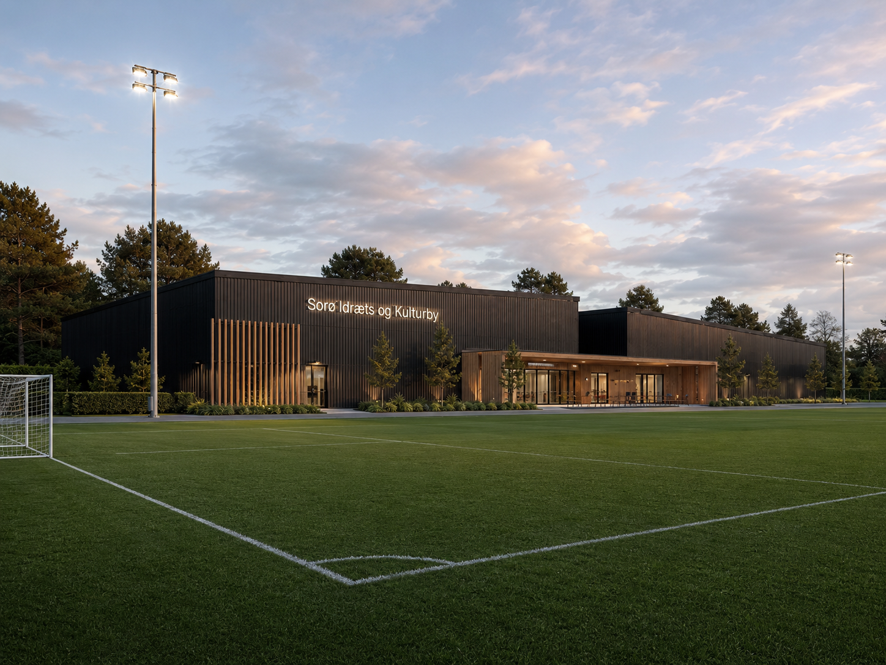

Hele året. For alle generationer. Det er den simple idé bag Sorø Idræts- & Kulturby.
Det startede med en gruppe frivillige i LBI, der ville give Sorø foreningsdrevne padelbaner. Men jo mere vi talte med foreninger, forældre, seniorer og kommunen, jo tydeligere blev det: Behovet er meget større end padel.
Der mangler seniortilbud i dagtimerne. Der mangler dans til pigerne. Der mangler et sted, hvor unge kan dyrke multisport i hverdagen, og hvor foreningerne kan mødes på tværs. Der mangler, kort sagt, et samlingssted.
Derfor bygger vi ikke bare en hal. Vi bygger en idræts- og kulturby.

Placeringen er valgt, så de to eksisterende 11-mandsbaner bevares, og en fremtidig udvidelse af skolen ikke berøres.
Padelbaner og foreningsfitness. Rammen om hverdagsmotion for alle aldre, drevet af foreningen, ikke af kommercielle interesser.
En fleksibel hal op til håndboldbanestørrelse med plads til multisport, dans, klatring, e-bikes og meget mere.
Et fælles hjem for foreninger og kulturliv. Mødelokaler, samvær og aktiviteter, der binder byen sammen.
Vi ønsker et tæt samarbejde med Sorø Kommune og byder alle interesserede foreninger velkommen, herunder de aktører der i dag bruger Skolevej: orienteringsklub, balletforening, LOF, lokalhistorisk forening, lokalråd og flere.
Organiseringen som selvejende forening med kommunal repræsentation i bestyrelsen er en gennemprøvet model. Den kendes fra bl.a. Vissenbjerg Idræts- & Kulturcenter, Sørbyhallen og Haslev Hallerne, og den sikrer både lokal forankring og gennemsigtighed.
Projektet kan bygges samlet eller i etaper, så økonomien altid er realistisk.
En overordnet tidslinje. Detaljerne aftales løbende med kommune, rådgivere og fonde.
Idéen udvikles, tegninger og tilbud indhentes, dialog med Sorø Kommune indledes.
Politisk tilkendegivelse, samarbejdsmodel og projektomfang fastlægges. Lokalplanproces og projektering går i gang.
Fondsansøgninger, myndighedsprojekt og valg af entreprenør.
Byggestart og åbning af de første faciliteter i Sorø Idræts- & Kulturby.
Tallene taler deres tydelige sprog. Se hvorfor Sorø har brug for et løft nu.
Se udfordringen